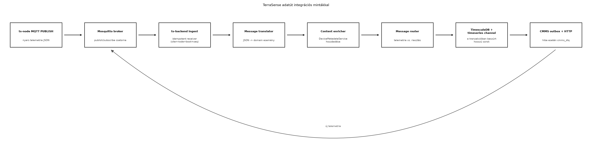

A TerraSense eddig befelé dolgozott: MQTT-ből olvasott, idősorba írt, REST API-t adott. Amint vállalati környezetbe kerül, megjelennek a kifelé irányuló kapcsolatok: a karbantartási rendszernek (CMMS) munkalapot kell nyitni túl magas hőmérséklet esetén, az ERP-nek összesítőt kell küldeni, egy riasztási felület webhookot vár. Ha ezeket a kapcsolatokat egyedi, pontonkénti kóddal oldjuk meg, a backend hamar áttekinthetetlenné válik, a hibakezelés pedig szétszóródik. Az Enterprise Integration Patterns (EIP) célja, hogy az ilyen üzenetfeldolgozási lépéseket újrafelhasználható, jól elnevezett építőelemekre bontsa.
Ebben az alfejezetben az Eseményvezérelt feldolgozás: Kafka és a kézbesítési szemantika alfejezetben bevezetett csatorna- és kézbesítési szemléletet visszük tovább: a mintákat a TerraSense konkrét adatútján alkalmazzuk, és külön hangsúlyt kap az outbox, amely a JEE-ből Spring Bootba: fogalmi híd C/C++ fejlesztőknek alfejezetben megismert Spring-tranzakciókkal dolgozik együtt. A fejezet kódja egy minimális, önállóan forduló Spring Boot 3.3.4 modul; a Maven-futtatás a lektorálási környezetben nem történt meg, a kód statikusan ellenőrzött. A labor a hallgatói környezetben futtatható.
Definíció (üzenet). Az üzenet (message) önálló, továbbítható adatcsomag, amely fejlécből (header) és törzsből (body) áll. A fejléc hordozza az azonosítókat, az időbélyeget, a típust és a kézbesítési metaadatokat; a törzs a tényleges adat.
Definíció (csatorna). A csatorna (message channel) logikai cím, amelyen keresztül az alkalmazások üzenetet küldenek és fogadnak. A csatorna elválasztja a küldőt a fogadótól: a küldő nem ismeri a fogadó címét, csak a csatorna nevét. MQTT-ben a topic, Kafka-ban a topic, JMS-ben a destination tölti be ezt a szerepet.
Definíció (Message és MessageBuilder). A Spring
Integration MessageChannel.send metódusa
Message<?> objektumot vár, nem nyers domain
objektumot. A MessageBuilder állítja elő a
Message példányt a törzsből és a fejlécekből; a routerben
ezért minden kimenet MessageBuilder-rel készül. A
DirectChannel szinkron hívja a feliratkozott handlert,
ezért a hívó szál tranzakciója a handlerig terjed.
A gyakorlati integrációkban az üzenetek ritkán érkeznek pontosan abban a formában, ahogy a fogadó várja. A leggyakoribb feldolgozási minták:
TelemetryEvent rekorddá fordítja, vagy a CMMS felé egy
másik JSON-sémát állít elő.node_id és site azonosítót
küld; a backend a DeviceMetadataService-ből kiegészíti az
üzenetet a telepítési hellyel, az eszköztípussal és a karbantartási
felelőssel.cmms_dlq adatbázistábla, nem külön MQTT-topic.Az outbox tábla állapotgépe a TerraSense-ben: PENDING →
PROCESSING → SENT, illetve
PENDING → PROCESSING → PENDING
(újrapróbálkozás) vagy DEAD (végleges hiba, DLQ). A
PROCESSING állapot azért kell, hogy a publisher összeomlása
után a rekord ne maradjon örökre „kész” állapotban: egy helyreállító
lekérdezés az öt percnél régebbi PROCESSING rekordokat
PENDING-re állítja, és a következő kör újra elküldi őket.
Az újraküldés biztonságos, mert a work_order_id stabil
idempotencia-kulcs.
Ezek a minták egymásra épülnek. A TerraSense adatútját az alábbi ábra foglalja össze.

A folyamatábra lépései: az eszköz a brokerre küld, ahonnan a backend
fogadja; az ingest idempotensen dolgozik a
(site, node_id, boot_id, seq) kulccsal; a translator a
nyers JSON-ból domain eseményt készít; az enricher hozzáadja a
metaadatot; a router szétválasztja a normál telemetriát és a riasztást;
az idősoros beszúrás és a CMMS-outbox ugyanabban a tranzakcióban
történik; végül a publisher HTTP-n továbbítja a munkalapot, hiba esetén
a cmms_dlq táblába.
A minták nem mindig szükségesek, és a túlzott használatuk is káros. Az alábbi táblázat a leggyakoribb döntési helyzeteket foglalja össze.
| Helyzet | Ajánlott minta | Indoklás és kompromisszum |
|---|---|---|
| Két rendszer eltérő adatformátumot vár | Message translator | A fordítás egy helyen marad; a küldő és a fogadó nem változik, de a translator újabb karbantartandó komponens. |
| Több fogadó eltérő érdeklődéssel | Message router vagy publish-subscribe | A broker vagy router szétválasztja a felelősségeket; a router feltételes logikája egyszerűbb, de a szabályok növekedésével külön szabálymotor kellhet. |
| Az üzenetből hiányzik a feldolgozáshoz szükséges adat | Content enricher | Külső hívás szükséges, ezért gyorsítótár és időtúllépés nélkül lassíthatja az adatutat. |
| Külső HTTP hívás sikertelen | Dead letter channel + újrapróbálkozás | Nem veszítjük el az üzenetet, de a DLQ-t figyelni kell, különben csendben gyűlik a hiba. |
| Duplikátumok at-least-once kézbesítésnél | Idempotent receiver | Az üzenetazonosító alapú deduplikáció garantálja az egyszeri hatást; a kulcs megválasztása üzleti döntés. |
| A backend adatbázis-írása és üzenetküldése konzisztens kell legyen | Outbox | Ugyanabban a tranzakcióban írjuk az adatot és a kimenő üzenetet; a késleltetés nő, de a konzisztencia garantált. |
| A csatorna szinkron vagy aszinkron | DirectChannel, illetve ExecutorChannel | A DirectChannel megtartja a tranzakciót, de blokkolja a
hívót; az ExecutorChannel leválasztja, de a tranzakció nem
öröklődik, ezért külön tranzakciós outbox kell. |
A teljes értékű ESB-termékek bemutatása kívül esik ezen alfejezet keretein; a fenti minták könnyű súlyú, alkalmazásba ágyazott megoldások, amelyek a TerraSense méretéhez illeszkednek.
Vegyünk egy konkrét telemetria-üzenetet, amely a
terrasense/gh1/n001/telemetry topicra érkezik. A Ingest: MQTT-ből a backendbe, idempotensen
alfejezet kanonikus sémáját használjuk; a hőmérséklet 31,2 °C, a
talajnedvesség 18,0%, tehát mindkét riasztási feltétel teljesül:
{
"schema_version": 1,
"site": "gh1",
"node_id": "n001",
"seq": 42,
"ts": 1717171200000,
"boot_id": "b01",
"measurements": {
"temperature": {"value": 31.2, "unit": "Cel", "valid": true},
"humidity": {"value": 55.0, "unit": "%RH", "valid": true},
"soil_moisture": {"value": 18.0, "unit": "%", "valid": true}
}
}A ts-backend MQTT ingest komponense először idempotens
fogadóként működik: a (site, node_id, boot_id, seq) kulcsot
a telemetry_ingest táblában tárolja. Ha a kulcs már
szerepel, az üzenet duplikátum, és a feldolgozás leáll. A Idősoros adatbázisok és adatmodellezés alfejezet
repositorya a telemetry_ingest eseménytáblába és a hosszú
formátumú telemetry hypertable-be ír, egy tranzakcióban. A
translator ezután egy TelemetryEvent domain rekorddá
alakítja az üzenetet, az enricher kiegészíti a
DeviceMetadataService metaadataival, a router pedig a
csatornákra irányít.
A példa a 15.1-es ts-backend projektre épül. A
pom.xml-ben a Spring Boot 3.3.4 parent már meghatározza a
verziókat; a Spring Integrationhöz és a tesztekhez az alábbi két
függőség kell:
<dependency>
<groupId>org.springframework.boot</groupId>
<artifactId>spring-boot-starter-integration</artifactId>
</dependency>
<dependency>
<groupId>org.springframework.boot</groupId>
<artifactId>spring-boot-starter-test</artifactId>
<scope>test</scope>
</dependency>A projektfa a lényeges új fájlokkal:
ts-backend/
pom.xml
src/main/java/com/terrasense/backend/
TelemetryMessage.java (15.1, változatlan DTO)
Measurement.java (15.1, változatlan)
TelemetryRepository.java (15.2, hosszú tábla + telemetry_ingest)
TelemetryEvent.java
EnrichedTelemetry.java
AlarmEvent.java
DeviceMetadata.java
DeviceMetadataService.java
JdbcDeviceMetadataService.java
TelemetryTranslator.java
TelemetryEnricher.java
TelemetryRouter.java
TelemetryFlowConfiguration.java
TimeseriesOutputHandler.java
TelemetryPipelineService.java
CmmsWorkOrder.java
CmmsWorkOrderPayload.java
CmmsOutboxRepository.java
CmmsOutboxHandler.java
CmmsOutboxService.java
CmmsDlqRepository.java
OutboxRecord.java
OutboxPublisher.java
CmmsClientConfiguration.java
src/main/resources/
application.yaml
03_integration.sql
src/test/java/com/terrasense/backend/
TelemetryTranslatorTest.java
TelemetryEnricherTest.java
TelemetryRouterTest.java
CmmsWorkOrderTest.javaA TelemetryEvent a kanonikus üzenet domain változata. A
schemaVersion, site, nodeId,
seq, ts és bootId mezők mellett a
measurements térkép a 15.1-es Measurement
rekordot használja, így a repository TelemetryMessage
DTO-ja közvetlenül előállítható belőle. A
TelemetryEvent.java:
package com.terrasense.backend;
import java.util.Map;
public record TelemetryEvent(
int schemaVersion,
String site,
String nodeId,
long seq,
long ts,
String bootId,
Map<String, Measurement> measurements) {
public TelemetryEvent {
measurements = Map.copyOf(measurements);
}
public Double temperature() {
return validValue("temperature");
}
public Double soilMoisture() {
return validValue("soil_moisture");
}
private Double validValue(String type) {
Measurement measurement = measurements.get(type);
if (measurement == null
|| !Boolean.TRUE.equals(measurement.valid())
|| measurement.value() == null) {
return null;
}
return measurement.value();
}
public TelemetryMessage toMessage() {
return new TelemetryMessage(
schemaVersion, nodeId, seq, ts, site, bootId,
measurements, null, null, null);
}
}A DeviceMetadata, az EnrichedTelemetry és
az AlarmEvent rekordok:
package com.terrasense.backend;
public record DeviceMetadata(
String site,
String nodeId,
String siteName,
String deviceType,
String maintenanceOwner) {}package com.terrasense.backend;
public record EnrichedTelemetry(TelemetryEvent telemetry, DeviceMetadata metadata) {
public String eventKey() {
return telemetry.site() + "/" + telemetry.nodeId() + "/"
+ telemetry.bootId() + "/" + telemetry.seq();
}
}package com.terrasense.backend;
public record AlarmEvent(
TelemetryEvent telemetry,
DeviceMetadata metadata,
String faultType,
String severity,
double value,
String unit) {
public String eventKey() {
return telemetry.site() + "/" + telemetry.nodeId() + "/"
+ telemetry.bootId() + "/" + telemetry.seq() + "/" + faultType;
}
public static AlarmEvent highTemperature(EnrichedTelemetry enriched, double value) {
return new AlarmEvent(enriched.telemetry(), enriched.metadata(),
"high_temperature", "critical", value, "Cel");
}
public static AlarmEvent lowSoilMoisture(EnrichedTelemetry enriched, double value) {
return new AlarmEvent(enriched.telemetry(), enriched.metadata(),
"low_soil_moisture", "warning", value, "%");
}
}A metaadatszolgáltatás interfésze és JDBC-implementációja:
package com.terrasense.backend;
@FunctionalInterface
public interface DeviceMetadataService {
DeviceMetadata get(String site, String nodeId);
}package com.terrasense.backend;
import org.springframework.jdbc.core.JdbcTemplate;
import org.springframework.stereotype.Repository;
@Repository
public class JdbcDeviceMetadataService implements DeviceMetadataService {
private final JdbcTemplate jdbc;
public JdbcDeviceMetadataService(JdbcTemplate jdbc) {
this.jdbc = jdbc;
}
@Override
public DeviceMetadata get(String site, String nodeId) {
return jdbc.queryForObject("""
SELECT site, node_id, site_name, device_type, maintenance_owner
FROM device_metadata
WHERE site = ? AND node_id = ?
""",
(rs, rowNum) -> new DeviceMetadata(
rs.getString("site"),
rs.getString("node_id"),
rs.getString("site_name"),
rs.getString("device_type"),
rs.getString("maintenance_owner")),
site, nodeId);
}
}A translator a 15.1-es TelemetryMessage DTO-t használja,
így a lapos, 0-es verziójú formátum adaptere is működik. A topic és a
payload site/node azonosságát, a seq/ts
pozitivitását és a mérési értékek meglétét is ellenőrzi. A
TelemetryTranslator.java:
package com.terrasense.backend;
import com.fasterxml.jackson.core.JsonProcessingException;
import com.fasterxml.jackson.databind.ObjectMapper;
import java.util.Map;
import java.util.regex.Matcher;
import java.util.regex.Pattern;
import org.springframework.stereotype.Component;
@Component
public class TelemetryTranslator {
private static final Pattern TOPIC_PATTERN =
Pattern.compile("^terrasense/([^/]+)/([^/]+)/telemetry$");
private final ObjectMapper objectMapper;
public TelemetryTranslator(ObjectMapper objectMapper) {
this.objectMapper = objectMapper;
}
public TelemetryEvent translate(String topic, String payload) {
Matcher matcher = TOPIC_PATTERN.matcher(topic);
if (!matcher.matches()) {
throw new IllegalArgumentException("Érvénytelen telemetria-topic: " + topic);
}
TelemetryMessage message;
try {
message = objectMapper.readValue(payload, TelemetryMessage.class);
} catch (JsonProcessingException e) {
throw new IllegalArgumentException("Érvénytelen telemetria JSON", e);
}
int version = message.effectiveSchemaVersion();
if (version != 0 && version != 1) {
throw new IllegalArgumentException("Nem támogatott schema_version: " + version);
}
if (version == 1 && (message.measurements() == null
|| message.measurements().isEmpty())) {
throw new IllegalArgumentException(
"schema_version=1 mellett hiányzó measurements");
}
if (version == 0 && message.measurements() != null
&& !message.measurements().isEmpty()) {
throw new IllegalArgumentException(
"schema_version=0 mellett measurements nem lehet jelen");
}
if (version == 0 && !message.isLegacyFlat()) {
throw new IllegalArgumentException(
"schema_version=0 mellett hiányoznak a lapos mérési mezők");
}
if (message.node_id() == null
|| !message.node_id().equals(matcher.group(2))) {
throw new IllegalArgumentException("A topic node és a payload node eltér");
}
if (message.site() != null && !message.site().isBlank()
&& !message.site().equals(matcher.group(1))) {
throw new IllegalArgumentException("A topic site és a payload site eltér");
}
if (message.seq() == null || message.seq() < 0) {
throw new IllegalArgumentException("Hibás seq");
}
if (message.ts() == null
|| message.ts() < 1_600_000_000_000L
|| message.ts() > 4_000_000_000_000L) {
throw new IllegalArgumentException("Hibás ts");
}
Map<String, Measurement> measurements = message.normalizedMeasurements();
if (measurements.isEmpty()) {
throw new IllegalArgumentException("Hiányzó measurements");
}
for (Map.Entry<String, Measurement> entry : measurements.entrySet()) {
if (entry.getKey() == null || entry.getKey().isBlank()) {
throw new IllegalArgumentException("Üres méréstípus");
}
Measurement measurement = entry.getValue();
if (measurement == null || measurement.value() == null) {
throw new IllegalArgumentException(
"Hiányzó érték a(z) " + entry.getKey() + " mérésben");
}
if (version == 1) {
if (measurement.unit() == null || measurement.unit().isBlank()) {
throw new IllegalArgumentException(
"Hiányzó mértékegység: " + entry.getKey());
}
if (measurement.valid() == null) {
throw new IllegalArgumentException(
"Hiányzó valid jelző: " + entry.getKey());
}
if (!measurement.valid() && (measurement.reason() == null
|| measurement.reason().isBlank())) {
throw new IllegalArgumentException(
"Érvénytelen mérés indoklás nélkül: " + entry.getKey());
}
}
}
return new TelemetryEvent(
version, matcher.group(1), matcher.group(2),
message.seq(), message.ts(), message.effectiveBootId(), measurements);
}
}Az enricher konstruktorinjektálással kapja a szolgáltatást. A
TelemetryEnricher.java:
package com.terrasense.backend;
import org.springframework.stereotype.Component;
@Component
public class TelemetryEnricher {
private final DeviceMetadataService metadataService;
public TelemetryEnricher(DeviceMetadataService metadataService) {
this.metadataService = metadataService;
}
public EnrichedTelemetry enrich(TelemetryEvent event) {
DeviceMetadata metadata = metadataService.get(event.site(), event.nodeId());
return new EnrichedTelemetry(event, metadata);
}
}A router a Spring Integration MessageChannel interfészét
használja, a MessageBuilder-rel készít Message
objektumot, és a hőmérséklet, illetve a talajnedvesség alapján dönt. A
TelemetryRouter.java:
package com.terrasense.backend;
import org.springframework.beans.factory.annotation.Qualifier;
import org.springframework.integration.support.MessageBuilder;
import org.springframework.messaging.Message;
import org.springframework.messaging.MessageChannel;
import org.springframework.stereotype.Component;
@Component
public class TelemetryRouter {
private final MessageChannel timeseriesOutput;
private final MessageChannel alarmOutput;
public TelemetryRouter(
@Qualifier("timeseriesOutput") MessageChannel timeseriesOutput,
@Qualifier("alarmOutput") MessageChannel alarmOutput) {
this.timeseriesOutput = timeseriesOutput;
this.alarmOutput = alarmOutput;
}
public void route(EnrichedTelemetry enriched) {
Message<EnrichedTelemetry> telemetryMessage = MessageBuilder.withPayload(enriched)
.setHeader("site", enriched.telemetry().site())
.setHeader("nodeId", enriched.telemetry().nodeId())
.setHeader("seq", enriched.telemetry().seq())
.setHeader("eventKey", enriched.eventKey())
.build();
timeseriesOutput.send(telemetryMessage);
Double temperature = enriched.telemetry().temperature();
if (temperature != null && temperature > 30.0) {
sendAlarm(AlarmEvent.highTemperature(enriched, temperature));
}
Double soilMoisture = enriched.telemetry().soilMoisture();
if (soilMoisture != null && soilMoisture < 20.0) {
sendAlarm(AlarmEvent.lowSoilMoisture(enriched, soilMoisture));
}
}
private void sendAlarm(AlarmEvent alarm) {
Message<AlarmEvent> message = MessageBuilder.withPayload(alarm)
.setHeader("eventKey", alarm.eventKey())
.setHeader("faultType", alarm.faultType())
.setHeader("site", alarm.telemetry().site())
.setHeader("nodeId", alarm.telemetry().nodeId())
.setHeader("seq", alarm.telemetry().seq())
.build();
alarmOutput.send(message);
}
}A csatornák DirectChannel példányok, amelyek szinkron
hívják a feliratkozókat. A @ServiceActivator handlerek és a
konfiguráció:
package com.terrasense.backend;
import org.springframework.context.annotation.Bean;
import org.springframework.context.annotation.Configuration;
import org.springframework.integration.channel.DirectChannel;
import org.springframework.integration.config.EnableIntegration;
import org.springframework.messaging.MessageChannel;
@Configuration
@EnableIntegration
public class TelemetryFlowConfiguration {
@Bean
public MessageChannel timeseriesOutput() {
return new DirectChannel();
}
@Bean
public MessageChannel alarmOutput() {
return new DirectChannel();
}
}package com.terrasense.backend;
import lombok.extern.slf4j.Slf4j;
import org.springframework.integration.annotation.ServiceActivator;
import org.springframework.messaging.Message;
import org.springframework.stereotype.Component;
@Slf4j
@Component
public class TimeseriesOutputHandler {
@ServiceActivator(inputChannel = "timeseriesOutput")
public void handle(Message<EnrichedTelemetry> message) {
EnrichedTelemetry enriched = message.getPayload();
log.debug("Idősoros kimenet: site={}, node={}, seq={}",
enriched.telemetry().site(),
enriched.telemetry().nodeId(),
enriched.telemetry().seq());
}
}A TimeseriesOutputHandler a példában naplóz; a tényleges
idősoros beszúrást a TelemetryRepository végzi a
pipeline-tranzakcióban. A csatorna így egy későbbi analitikai fogyasztó
számára is nyitva marad.
A TelemetryPipelineService fogja össze a fordítást, az
idempotens beszúrást, a kiegészítést és az irányítást. A
@Transactional miatt a
telemetry_ingest/telemetry beszúrás és a
router által kiváltott CMMS-outbox írás ugyanabban a tranzakcióban
történik. A TelemetryPipelineService.java:
package com.terrasense.backend;
import lombok.extern.slf4j.Slf4j;
import org.springframework.stereotype.Service;
import org.springframework.transaction.annotation.Transactional;
@Slf4j
@Service
public class TelemetryPipelineService {
private final TelemetryTranslator translator;
private final TelemetryRepository telemetryRepository;
private final TelemetryEnricher enricher;
private final TelemetryRouter router;
public TelemetryPipelineService(
TelemetryTranslator translator,
TelemetryRepository telemetryRepository,
TelemetryEnricher enricher,
TelemetryRouter router) {
this.translator = translator;
this.telemetryRepository = telemetryRepository;
this.enricher = enricher;
this.router = router;
}
@Transactional
public void process(String topic, String payload) {
TelemetryEvent event;
try {
event = translator.translate(topic, payload);
} catch (IllegalArgumentException e) {
telemetryRepository.insertDeadLetter(topic, payload, e.getMessage());
log.warn("Érvénytelen telemetria a pipeline-ban: {}", e.getMessage());
return;
}
TelemetryRepository.IngestOutcome outcome =
telemetryRepository.insertIfAbsent(event.site(), event.toMessage(), topic);
if (outcome != TelemetryRepository.IngestOutcome.INSERTED) {
log.debug("Az esemény nem új beillesztés ({}), a pipeline kihagyja: {}",
outcome, event);
return;
}
EnrichedTelemetry enriched = enricher.enrich(event);
router.route(enriched);
}
}A pipeline-t a 15.1-es MQTT-ingest a validálás után hívja:
pipeline.process(topic, payload);A 15.1-es TelemetryIngestService.process metódusában a
közvetlen repository.insertIfAbsent(...) hívást és az
IngestOutcome kezelését ez a hívás váltja fel; a
validate metódus az ingestben maradhat, de a pipeline
translatora ugyanezeket az ellenőrzéseket is elvégzi, és a hibás adatot
ugyanúgy a dead_letter táblába irányítja. Az átmeneti
adatbázis-hibák továbbra is az ingest retry spooljába kerülnek, mert a
kivétel a pipeline.process hívásból kifelé halad.
A TelemetryRepository.insertIfAbsent a 15.2-es
implementáció, amely a telemetry_ingest eseménytáblába és a
hosszú telemetry táblába ír. Ha az esemény duplikátum, a
pipeline nem irányít tovább, mert az első feldolgozás már megtette. Ha a
tartalom ütközik, a repository a dead_letter táblába menti
a payloadot, és a pipeline szintén nem irányít. Az outbox írása csak új
esemény esetén történik.
Fontos tranzakciós feltétel. A
DirectChannel szinkron, ezért a
TelemetryRouter send hívása még a
process tranzakciójában fut, és a
CmmsOutboxHandler által végzett outbox-beszúrás ugyanabba a
tranzakcióba tartozik. Ha a csatorna ExecutorChannel vagy
QueueChannel lenne, a handler másik szálon futna, a
tranzakció nem öröklődne, és az outbox beszúrása külön tranzakcióba
kerülne. Ilyen esetben a riasztást előbb egy alarm táblába
kellene írni ugyanabban a tranzakcióban, majd abból egy külön folyamat
töltené fel az outboxot.
A CMMS felé történő továbbítás outbox-szal valósul meg. A
cmms_outbox tábla rekordja ugyanabban a
Spring-tranzakcióban jön létre, mint az idősoros beszúrás. Az alábbi SQL
a device_metadata, a cmms_outbox és a
cmms_dlq táblát hozza létre:
-- ~/iot-labor/i048/03_integration.sql
CREATE TABLE IF NOT EXISTS device_metadata (
site TEXT NOT NULL,
node_id TEXT NOT NULL,
site_name TEXT NOT NULL,
device_type TEXT NOT NULL,
maintenance_owner TEXT NOT NULL,
PRIMARY KEY (site, node_id)
);
INSERT INTO device_metadata
(site, node_id, site_name, device_type, maintenance_owner)
VALUES
('gh1', 'n001', 'Greenhouse 1', 'ts-node', 'gardener@example.com')
ON CONFLICT (site, node_id) DO NOTHING;
CREATE TABLE IF NOT EXISTS cmms_outbox (
id BIGSERIAL PRIMARY KEY,
event_key TEXT NOT NULL UNIQUE,
work_order_id UUID NOT NULL UNIQUE,
payload JSONB NOT NULL,
status TEXT NOT NULL DEFAULT 'PENDING'
CHECK (status IN ('PENDING', 'PROCESSING', 'SENT', 'DEAD')),
attempt_count INT NOT NULL DEFAULT 0,
next_attempt_at TIMESTAMPTZ NOT NULL DEFAULT now(),
claimed_at TIMESTAMPTZ,
last_error TEXT,
created_at TIMESTAMPTZ NOT NULL DEFAULT now(),
sent_at TIMESTAMPTZ
);
CREATE INDEX IF NOT EXISTS cmms_outbox_due_idx
ON cmms_outbox (status, next_attempt_at);
CREATE INDEX IF NOT EXISTS cmms_outbox_claim_idx
ON cmms_outbox (status, claimed_at);
CREATE TABLE IF NOT EXISTS cmms_dlq (
id BIGSERIAL PRIMARY KEY,
outbox_id BIGINT NOT NULL REFERENCES cmms_outbox(id),
work_order_id UUID NOT NULL,
payload JSONB NOT NULL,
reason TEXT NOT NULL,
created_at TIMESTAMPTZ NOT NULL DEFAULT now(),
replayed_at TIMESTAMPTZ
);
CREATE INDEX IF NOT EXISTS cmms_dlq_open_idx
ON cmms_dlq (created_at) WHERE replayed_at IS NULL;A work_order_id a küldő oldalán keletkező, stabil
idempotencia-kulcs. A CmmsWorkOrder.from a riasztás
eseménykulcsából determinisztikus UUID-t képez, így ugyanahhoz a
riasztáshoz minden újrapróbálkozás ugyanazt a munkalap-azonosítót küldi.
A CmmsWorkOrderPayload a CMMS-szerződés szerinti
JSON-mezőneveket használja. A CmmsWorkOrder.java és a
CmmsWorkOrderPayload.java:
package com.terrasense.backend;
import java.nio.charset.StandardCharsets;
import java.util.UUID;
public record CmmsWorkOrder(
String eventKey,
UUID workOrderId,
CmmsWorkOrderPayload payload) {
public static CmmsWorkOrder from(AlarmEvent alarm) {
String eventKey = alarm.eventKey();
UUID workOrderId = UUID.nameUUIDFromBytes(
eventKey.getBytes(StandardCharsets.UTF_8));
CmmsWorkOrderPayload payload = new CmmsWorkOrderPayload(
workOrderId.toString(),
alarm.telemetry().site(),
alarm.telemetry().nodeId(),
alarm.faultType(),
alarm.severity(),
alarm.telemetry().ts(),
alarm.value(),
alarm.unit(),
alarm.metadata().maintenanceOwner());
return new CmmsWorkOrder(eventKey, workOrderId, payload);
}
}package com.terrasense.backend;
import com.fasterxml.jackson.annotation.JsonProperty;
public record CmmsWorkOrderPayload(
@JsonProperty("work_order_id") String workOrderId,
String site,
@JsonProperty("node_id") String nodeId,
@JsonProperty("fault_type") String faultType,
String severity,
long timestamp,
double value,
String unit,
@JsonProperty("maintenance_owner") String maintenanceOwner) {}A CmmsOutboxRepository végzi a tranzakciós beszúrást, a
rekordok igénylését (claim), a
SENT/PENDING/DEAD
állapotátmeneteket és az elakadt PROCESSING rekordok
helyreállítását. A SELECT ... FOR UPDATE SKIP LOCKED több
publisher-példány esetén is megakadályozza, hogy ugyanazt a rekordot
egyszerre ketten küldjék. A CmmsOutboxRepository.java:
package com.terrasense.backend;
import com.fasterxml.jackson.core.JsonProcessingException;
import com.fasterxml.jackson.databind.ObjectMapper;
import java.sql.Timestamp;
import java.time.Instant;
import java.util.List;
import java.util.UUID;
import org.springframework.jdbc.core.JdbcTemplate;
import org.springframework.stereotype.Repository;
@Repository
public class CmmsOutboxRepository {
private final JdbcTemplate jdbc;
private final ObjectMapper objectMapper;
public CmmsOutboxRepository(JdbcTemplate jdbc, ObjectMapper objectMapper) {
this.jdbc = jdbc;
this.objectMapper = objectMapper;
}
public boolean insertIfAbsent(CmmsWorkOrder workOrder) {
String payload;
try {
payload = objectMapper.writeValueAsString(workOrder.payload());
} catch (JsonProcessingException e) {
throw new IllegalStateException("A CMMS payload nem szerializálható", e);
}
int rows = jdbc.update("""
INSERT INTO cmms_outbox
(event_key, work_order_id, payload, status, attempt_count, next_attempt_at)
VALUES (?, ?::uuid, ?::jsonb, 'PENDING', 0, now())
ON CONFLICT (event_key) DO NOTHING
""",
workOrder.eventKey(),
workOrder.workOrderId().toString(),
payload);
return rows == 1;
}
public int recoverStaleClaims() {
return jdbc.update("""
UPDATE cmms_outbox
SET status = 'PENDING', claimed_at = NULL, next_attempt_at = now()
WHERE status = 'PROCESSING'
AND claimed_at < now() - interval '5 minutes'
""");
}
public List<OutboxRecord> claimDue(int limit) {
return jdbc.query("""
UPDATE cmms_outbox
SET status = 'PROCESSING',
claimed_at = now(),
attempt_count = attempt_count + 1
WHERE id IN (
SELECT id
FROM cmms_outbox
WHERE status = 'PENDING' AND next_attempt_at <= now()
ORDER BY next_attempt_at
LIMIT ?
FOR UPDATE SKIP LOCKED
)
RETURNING id, event_key, work_order_id, payload, attempt_count
""",
(rs, rowNum) -> new OutboxRecord(
rs.getLong("id"),
rs.getString("event_key"),
UUID.fromString(rs.getString("work_order_id")),
rs.getString("payload"),
rs.getInt("attempt_count")),
limit);
}
public int markSent(long id) {
return jdbc.update("""
UPDATE cmms_outbox
SET status = 'SENT', sent_at = now(), claimed_at = NULL, last_error = NULL
WHERE id = ? AND status = 'PROCESSING'
""", id);
}
public int markRetry(long id, Instant nextAttemptAt, String error) {
return jdbc.update("""
UPDATE cmms_outbox
SET status = 'PENDING', claimed_at = NULL,
next_attempt_at = ?, last_error = ?
WHERE id = ? AND status = 'PROCESSING'
""", Timestamp.from(nextAttemptAt), error, id);
}
public int markDead(long id, String error) {
return jdbc.update("""
UPDATE cmms_outbox
SET status = 'DEAD', claimed_at = NULL, last_error = ?
WHERE id = ? AND status = 'PROCESSING'
""", error, id);
}
}Az OutboxRecord a claim eredménye:
package com.terrasense.backend;
import java.util.UUID;
public record OutboxRecord(
long id,
String eventKey,
UUID workOrderId,
String payload,
int attemptCount) {}A CmmsOutboxHandler a alarmOutput
csatornára iratkozik fel, és a riasztásból outbox-rekordot készít. Mivel
a DirectChannel szinkron, ez a beszúrás a
TelemetryPipelineService.process tranzakciójában fut:
package com.terrasense.backend;
import org.springframework.integration.annotation.ServiceActivator;
import org.springframework.messaging.Message;
import org.springframework.stereotype.Component;
@Component
public class CmmsOutboxHandler {
private final CmmsOutboxRepository outboxRepository;
public CmmsOutboxHandler(CmmsOutboxRepository outboxRepository) {
this.outboxRepository = outboxRepository;
}
@ServiceActivator(inputChannel = "alarmOutput")
public void handle(Message<AlarmEvent> message) {
outboxRepository.insertIfAbsent(CmmsWorkOrder.from(message.getPayload()));
}
}A DLQ-írást és a DEAD állapotot egy tranzakciós
szolgáltatás végzi, hogy a kettő együtt sikerüljön vagy együtt hiúsuljon
meg. A CmmsOutboxService.java és a
CmmsDlqRepository.java:
package com.terrasense.backend;
import org.springframework.stereotype.Service;
import org.springframework.transaction.annotation.Transactional;
@Service
public class CmmsOutboxService {
private final CmmsOutboxRepository outboxRepository;
private final CmmsDlqRepository dlqRepository;
public CmmsOutboxService(
CmmsOutboxRepository outboxRepository,
CmmsDlqRepository dlqRepository) {
this.outboxRepository = outboxRepository;
this.dlqRepository = dlqRepository;
}
@Transactional
public void markDeadAndDlq(OutboxRecord outboxRecord, String error) {
int updated = outboxRepository.markDead(outboxRecord.id(), error);
if (updated == 1) {
dlqRepository.insert(outboxRecord, error);
}
}
}package com.terrasense.backend;
import org.springframework.jdbc.core.JdbcTemplate;
import org.springframework.stereotype.Repository;
@Repository
public class CmmsDlqRepository {
private final JdbcTemplate jdbc;
public CmmsDlqRepository(JdbcTemplate jdbc) {
this.jdbc = jdbc;
}
public void insert(OutboxRecord outboxRecord, String reason) {
jdbc.update("""
INSERT INTO cmms_dlq
(outbox_id, work_order_id, payload, reason)
VALUES (?, ?::uuid, ?::jsonb, ?)
""",
outboxRecord.id(),
outboxRecord.workOrderId().toString(),
outboxRecord.payload(),
reason);
}
}A publisher a RestClient-tel küldi a kérést, az
Idempotency-Key fejlécben a stabil
work_order_id-val. A 2xx és a 409 Conflict egyaránt siker:
a 409 azt jelenti, hogy a CMMS már ismeri ezt a kulcsot, tehát nem
készül duplikált munkalap. A 408, a 429, az 5xx és a hálózati hiba
újrapróbálkozást indít; a többi 4xx végleges hiba, amelyet a DLQ-ba
teszünk. A OutboxPublisher.java:
package com.terrasense.backend;
import java.time.Instant;
import lombok.extern.slf4j.Slf4j;
import org.springframework.http.MediaType;
import org.springframework.scheduling.annotation.Scheduled;
import org.springframework.stereotype.Component;
import org.springframework.web.client.HttpClientErrorException;
import org.springframework.web.client.HttpServerErrorException;
import org.springframework.web.client.RestClient;
import org.springframework.web.client.RestClientException;
@Slf4j
@Component
public class OutboxPublisher {
private static final int BATCH_SIZE = 50;
private static final int MAX_ATTEMPTS = 8;
private final CmmsOutboxRepository outboxRepository;
private final CmmsOutboxService outboxService;
private final RestClient cmmsRestClient;
public OutboxPublisher(
CmmsOutboxRepository outboxRepository,
CmmsOutboxService outboxService,
RestClient cmmsRestClient) {
this.outboxRepository = outboxRepository;
this.outboxService = outboxService;
this.cmmsRestClient = cmmsRestClient;
}
@Scheduled(fixedDelayString = "${terrasense.cmms.publisher-delay:5000}")
public void publishDue() {
int recovered = outboxRepository.recoverStaleClaims();
if (recovered > 0) {
log.warn("{} elakadt PROCESSING outbox rekordot visszaállítottunk PENDING állapotba",
recovered);
}
for (OutboxRecord outboxRecord : outboxRepository.claimDue(BATCH_SIZE)) {
try {
publish(outboxRecord);
} catch (RuntimeException e) {
log.error("Váratlan hiba a(z) {} outbox rekord küldésekor",
outboxRecord.id(), e);
retryOrDead(outboxRecord, "váratlan hiba: " + e.getMessage());
}
}
}
private void publish(OutboxRecord outboxRecord) {
try {
cmmsRestClient.post()
.uri("/api/work-orders")
.header("Idempotency-Key", outboxRecord.workOrderId().toString())
.contentType(MediaType.APPLICATION_JSON)
.body(outboxRecord.payload())
.retrieve()
.toBodilessEntity();
outboxRepository.markSent(outboxRecord.id());
log.info("CMMS munkalap elküldve: outbox={}, workOrder={}",
outboxRecord.id(), outboxRecord.workOrderId());
} catch (HttpClientErrorException.Conflict e) {
outboxRepository.markSent(outboxRecord.id());
log.info("A CMMS már ismeri a(z) {} munkalapot, SENT állapot",
outboxRecord.workOrderId());
} catch (HttpClientErrorException e) {
int status = e.getStatusCode().value();
if (status == 408 || status == 429) {
retryOrDead(outboxRecord, e.getMessage());
} else {
outboxService.markDeadAndDlq(outboxRecord, e.getMessage());
log.error("A CMMS {} választ adott, a rekord DLQ-ba került: {}",
status, outboxRecord.workOrderId());
}
} catch (HttpServerErrorException e) {
retryOrDead(outboxRecord, e.getMessage());
} catch (RestClientException e) {
retryOrDead(outboxRecord, e.getMessage());
}
}
private void retryOrDead(OutboxRecord outboxRecord, String error) {
if (outboxRecord.attemptCount() >= MAX_ATTEMPTS) {
outboxService.markDeadAndDlq(outboxRecord,
"a maximális kísérletszám elfogyott: " + error);
log.error("A(z) {} rekord a maximális kísérletszám után DLQ-ba került",
outboxRecord.workOrderId());
return;
}
long delaySeconds = Math.min(300, 1L << Math.min(outboxRecord.attemptCount(), 8));
Instant nextAttemptAt = Instant.now().plusSeconds(delaySeconds);
outboxRepository.markRetry(outboxRecord.id(), nextAttemptAt, error);
log.warn("A(z) {} rekord újrapróbálkozása {} másodperc múlva (kísérlet: {})",
outboxRecord.workOrderId(), delaySeconds, outboxRecord.attemptCount());
}
}A RestClient-et időtúllépésekkel konfiguráljuk, hogy a
publisher ne akadjon el egy nem válaszoló CMMS miatt:
package com.terrasense.backend;
import org.springframework.beans.factory.annotation.Value;
import org.springframework.context.annotation.Bean;
import org.springframework.context.annotation.Configuration;
import org.springframework.http.client.SimpleClientHttpRequestFactory;
import org.springframework.web.client.RestClient;
@Configuration
public class CmmsClientConfiguration {
@Bean
public RestClient cmmsRestClient(
RestClient.Builder builder,
@Value("${terrasense.cmms.base-url}") String baseUrl) {
SimpleClientHttpRequestFactory factory = new SimpleClientHttpRequestFactory();
factory.setConnectTimeout(2_000);
factory.setReadTimeout(5_000);
return builder.baseUrl(baseUrl).requestFactory(factory).build();
}
}A szükséges application.yaml részlet:
terrasense:
cmms:
base-url: ${CMMS_BASE_URL:http://localhost:8081}
publisher-delay: 5000A SchedulingConfig a 15.1-es projektből már tartalmazza
az @EnableScheduling-et. Ha nem, a publisher
@Scheduled annotációja nem fut le.
A CMMS fogadóoldali szerződése:
| Elem | Érték |
|---|---|
| Metódus és útvonal | POST /api/work-orders |
| Fejléc | Content-Type: application/json,
Idempotency-Key: <work_order_id> |
| Törzs | a CmmsWorkOrderPayload JSON-ja |
| 201 Created / 200 OK | új munkalap létrejött |
| 409 Conflict | a kulcs már létezik; a publisher sikerként kezeli |
| 400 / 422 | validációs hiba; DEAD + cmms_dlq, emberi
javítás kell |
| 408 / 429 / 5xx / időtúllépés | átmeneti hiba; exponenciális újrapróbálkozás |
A fogadó oldalnak a work_order_id-t egyedi kulcsként
kell tárolnia. Ha a CMMS nem deduplikál, a hálózati újrapróbálkozás
duplikált munkalapot hoz létre, hiába küldjük az
Idempotency-Key fejlécet.
A commit és a HTTP-válasz közötti megszakítás. A megoldás három esetet kezel:
telemetry és a cmms_outbox sor együtt gördül
vissza; a MQTT-ingest retry spoolja újra feldolgozhatja az eseményt.
Nincs elveszett esemény és nincs outbox-sor.PENDING, a publisher a következő körben elküldi.
Nincs elveszett esemény.markSent
előtt: az outbox-sor PROCESSING marad. Öt perc
után a recoverStaleClaims visszaállítja
PENDING-re, a publisher ugyanazzal a
work_order_id-val újraküldi, a CMMS 200-at vagy 409-et ad,
és a sor SENT lesz. Nem készül duplikált munkalap, mert a
fogadó oldal a stabil idempotencia-kulcsot egyediként kezeli.A translator, az enricher és a router egységtesztjei a minimális
projektben lefuttathatók. A TelemetryTranslatorTest a
kanonikus payloadot és a topic/payload ütközést vizsgálja:
package com.terrasense.backend;
import static org.junit.jupiter.api.Assertions.assertEquals;
import static org.junit.jupiter.api.Assertions.assertThrows;
import com.fasterxml.jackson.databind.ObjectMapper;
import org.junit.jupiter.api.Test;
class TelemetryTranslatorTest {
private final ObjectMapper objectMapper = new ObjectMapper();
private final TelemetryTranslator translator = new TelemetryTranslator(objectMapper);
private static final String CANONICAL = """
{
"schema_version": 1,
"site": "gh1",
"node_id": "n001",
"seq": 42,
"ts": 1717171200000,
"boot_id": "b01",
"measurements": {
"temperature": {"value": 31.2, "unit": "Cel", "valid": true},
"soil_moisture": {"value": 18.0, "unit": "%", "valid": true}
}
}
""";
@Test
void canonicalPayloadIsTranslated() {
TelemetryEvent event = translator.translate(
"terrasense/gh1/n001/telemetry", CANONICAL);
assertEquals(1, event.schemaVersion());
assertEquals("gh1", event.site());
assertEquals("n001", event.nodeId());
assertEquals(42L, event.seq());
assertEquals(31.2, event.temperature(), 1e-9);
assertEquals(18.0, event.soilMoisture(), 1e-9);
}
@Test
void topicAndPayloadNodeMismatchIsRejected() {
assertThrows(IllegalArgumentException.class, () ->
translator.translate("terrasense/gh1/n002/telemetry", CANONICAL));
}
}A TelemetryEnricherTest a metaadat hozzáadását
ellenőrzi:
package com.terrasense.backend;
import static org.junit.jupiter.api.Assertions.assertEquals;
import java.util.Map;
import org.junit.jupiter.api.Test;
class TelemetryEnricherTest {
@Test
void metadataIsAddedToTheEvent() {
DeviceMetadataService metadataService = (site, nodeId) ->
new DeviceMetadata(site, nodeId, "Greenhouse 1", "ts-node",
"gardener@example.com");
TelemetryEnricher enricher = new TelemetryEnricher(metadataService);
TelemetryEvent event = new TelemetryEvent(
1, "gh1", "n001", 42L, 1717171200000L, "b01",
Map.of("temperature", new Measurement(31.2, "Cel", true, null)));
EnrichedTelemetry enriched = enricher.enrich(event);
assertEquals(event, enriched.telemetry());
assertEquals("Greenhouse 1", enriched.metadata().siteName());
assertEquals("gardener@example.com", enriched.metadata().maintenanceOwner());
}
}A TelemetryRouterTest QueueChannel-ekkel
fogja el a kimeneteket, és ellenőrzi, hogy a router nem módosítja a
törzset, valamint hogy a küszöbök felett mindkét riasztás kimegy:
package com.terrasense.backend;
import static org.junit.jupiter.api.Assertions.assertEquals;
import static org.junit.jupiter.api.Assertions.assertNotNull;
import static org.junit.jupiter.api.Assertions.assertNull;
import java.util.Map;
import org.junit.jupiter.api.Test;
import org.springframework.integration.channel.QueueChannel;
import org.springframework.messaging.Message;
class TelemetryRouterTest {
private static EnrichedTelemetry enriched(double temperature, double soilMoisture) {
TelemetryEvent event = new TelemetryEvent(
1, "gh1", "n001", 42L, 1717171200000L, "b01",
Map.of(
"temperature", new Measurement(temperature, "Cel", true, null),
"soil_moisture", new Measurement(soilMoisture, "%", true, null)));
DeviceMetadata metadata = new DeviceMetadata(
"gh1", "n001", "Greenhouse 1", "ts-node", "gardener@example.com");
return new EnrichedTelemetry(event, metadata);
}
@Test
void highTemperatureAndDrySoilProduceAlarms() {
QueueChannel timeseries = new QueueChannel();
QueueChannel alarm = new QueueChannel();
TelemetryRouter router = new TelemetryRouter(timeseries, alarm);
router.route(enriched(31.2, 18.0));
Message<?> timeseriesMessage = timeseries.receive(0);
assertNotNull(timeseriesMessage);
assertEquals(EnrichedTelemetry.class, timeseriesMessage.getPayload().getClass());
Message<?> firstAlarm = alarm.receive(0);
Message<?> secondAlarm = alarm.receive(0);
assertNotNull(firstAlarm);
assertNotNull(secondAlarm);
assertEquals("high_temperature",
((AlarmEvent) firstAlarm.getPayload()).faultType());
assertEquals("low_soil_moisture",
((AlarmEvent) secondAlarm.getPayload()).faultType());
}
@Test
void normalValuesOnlyGoToTimeseries() {
QueueChannel timeseries = new QueueChannel();
QueueChannel alarm = new QueueChannel();
TelemetryRouter router = new TelemetryRouter(timeseries, alarm);
router.route(enriched(24.0, 30.0));
assertNotNull(timeseries.receive(0));
assertNull(alarm.receive(0));
}
}A CmmsWorkOrderTest a determinisztikus
idempotencia-kulcsot ellenőrzi:
package com.terrasense.backend;
import static org.junit.jupiter.api.Assertions.assertEquals;
import java.util.Map;
import org.junit.jupiter.api.Test;
class CmmsWorkOrderTest {
@Test
void workOrderIdIsStableForTheSameAlarm() {
TelemetryEvent event = new TelemetryEvent(
1, "gh1", "n001", 42L, 1717171200000L, "b01",
Map.of("temperature", new Measurement(31.2, "Cel", true, null)));
DeviceMetadata metadata = new DeviceMetadata(
"gh1", "n001", "Greenhouse 1", "ts-node", "gardener@example.com");
AlarmEvent alarm = AlarmEvent.highTemperature(
new EnrichedTelemetry(event, metadata), 31.2);
CmmsWorkOrder first = CmmsWorkOrder.from(alarm);
CmmsWorkOrder second = CmmsWorkOrder.from(alarm);
assertEquals(first.workOrderId(), second.workOrderId());
assertEquals("gh1/n001/b01/42/high_temperature", first.eventKey());
assertEquals("gh1", first.payload().site());
assertEquals("high_temperature", first.payload().faultType());
}
}A tesztek a Maven test fázisában futnak. A lektorálási
környezetben Maven nem állt rendelkezésre, ezért a kód statikusan
ellenőrzött, a tesztek futtatása a hallgatói környezet feladata.
A minták helyes működését rétegenkénti tesztekkel ellenőrizzük. Az
enricher egységtesztje egy rögzített DeviceMetadata
objektummal dolgozik, és azt vizsgálja, hogy a kiegészített mezők
megjelennek. A router tesztje egy 31,2 °C-os és 18,0%-os eseményt ad be,
és ellenőrzi, hogy a timeseries csatornára egy üzenet, az alarm
csatornára két üzenet kerül; egy 24,0 °C-os és 30,0%-os esemény csak a
timeseries csatornára megy. Az outbox tesztje egy H2 vagy Testcontainers
PostgreSQL adatbázisban futtatja a tranzakciót, majd a
cmms_outbox táblában ellenőrzi a rekordot. Az idempotens
ingest tesztje ugyanazt a (site, node_id, boot_id, seq)
kulcsot kétszer küldi be, és meggyőződik róla, hogy a hosszú
telemetry táblában csak egyszer keletkeznek mérési
sorok.
A 03_integration.sql futtatása a laborban:
docker compose -f ~/iot-labor/stack/compose.yaml exec -T lab-timescaledb \
psql -U terra -d terrasense -v ON_ERROR_STOP=1 \
< ~/iot-labor/i048/03_integration.sqlA CMMS-szerződés kézi ellenőrzése curl-lel:
curl -i -X POST http://localhost:8081/api/work-orders \
-H 'Content-Type: application/json' \
-H 'Idempotency-Key: 0f2c7e4a-0000-3000-8000-000000000000' \
-d '{"work_order_id":"0f2c7e4a-0000-3000-8000-000000000000","site":"gh1","node_id":"n001","fault_type":"high_temperature","severity":"critical","timestamp":1717171200000,"value":31.2,"unit":"Cel","maintenance_owner":"gardener@example.com"}'Ugyanazzal az Idempotency-Key-jel ismételve a CMMS-nek
200-at vagy 409-et kell adnia, és nem hozhat létre második
munkalapot.
Az összeomlás tesztje SQL-lel. A commit és a
HTTP-válasz közötti megszakítás szimulálható anélkül, hogy a hálózati
hívást időzítenénk. Ha egy rekord PROCESSING állapotban
marad, állítsuk a claimed_at értékét öt percnél régebbre,
majd futtassuk a publisher következő körét:
UPDATE cmms_outbox
SET status = 'PROCESSING', claimed_at = now() - interval '6 minutes'
WHERE id = 1;
SELECT id, status, attempt_count, work_order_id FROM cmms_outbox WHERE id = 1;A következő publisher-futás recoverStaleClaims lépése
PENDING-re állítja a rekordot, a claimDue újra
igényli, és ugyanazzal a work_order_id-val elküldi. A CMMS
200/409 válasza után a rekord SENT lesz. A várt eredmény:
egyetlen munkalap, status = 'SENT', növekedett
attempt_count. Ha a CMMS nem idempotens, a teszt duplikált
munkalapot mutat, ami a fogadóoldali szerződés hiányára utal.
| Tünet | Ok | Javítás |
|---|---|---|
| A CMMS nem kap eseményeket, de a DLQ üres | A publisher nem fut, vagy a PENDING rekordok
next_attempt_at értéke a jövőben van |
Ellenőrizzük a @Scheduled futását, a
cmms_outbox.status és next_attempt_at
oszlopát; a SchedulingConfig tartalmazza-e az
@EnableScheduling-et |
Az ingest EmptyResultDataAccessException-t dob, és nem
ír telemetriát |
A device_metadata táblában nincs sor az adott
site/node_id párra |
Vegyük fel a metaadatot; a hiányzó metaadat konfigurációs hiba, ezért a tranzakció visszagördül, és az esemény nem vész el |
| A DLQ tele van ugyanazzal az üzenettel | A CMMS 4xx hibát ad (pl. érvénytelen séma), és a feldolgozó újrapróbálja | Javítsuk a CmmsWorkOrderPayload sémáját, majd a DLQ-ról
játsszuk vissza az üzenetet |
| Duplikált munkalapok a CMMS-ben | Az Idempotency-Key hiányzik, vagy a CMMS nem
deduplikál |
A work_order_id legyen a küldő oldalán generált stabil
kulcs, és a CMMS egyedi kényszerrel tárolja |
| Az idősoros táblában duplikált sorok | Az idempotens receiver nem tárolja a
(site, node_id, boot_id, seq) kulcsot |
A telemetry_ingest elsődleges kulcsa és az
ON CONFLICT DO NOTHING együtt véd |
MessageDeliveryException: no subscriber |
A DirectChannel-nek nincs feliratkozója |
Ellenőrizzük a @ServiceActivator(inputChannel = ...)
handlert és a csatorna bean nevét |
ClassNotFoundException: org.springframework.integration... |
Hiányzik a spring-boot-starter-integration |
Vegyük fel a függőséget a pom.xml-be |
A send(event) nem fordul le |
A MessageChannel.send Message<?>-t
vár, nem domain objektumot |
A router MessageBuilder.withPayload(event)...build()
hívást használjon |
A final csatornamezők inicializálatlanok |
Nincs konstruktor | Adjunk explicit konstruktort a @Qualifier annotált
paraméterekkel |
Az outbox rekord örökre PROCESSING |
A publisher a HTTP-hívás vagy a markSent előtt
összeomlott |
A recoverStaleClaims öt perc után visszaállítja;
ellenőrizzük a claimed_at értékét |
| A telemetria commitolódik, de az outbox nem | A csatorna aszinkron (ExecutorChannel), ezért a
tranzakció nem öröklődik |
Használjunk DirectChannel-t, vagy írjunk külön
alarm táblát ugyanabban a tranzakcióban |
Dual write outbox nélkül. Ha a backend előbb beszúr a TimescaleDB-be, majd közvetlenül hívja a CMMS REST API-t, akkor a kettő közötti hiba esetén a két rendszer állapota eltér. Az outbox minta éppen ezt a konzisztenciaproblémát oldja meg: a telemetria és az outbox ugyanabban a tranzakcióban commitol.
Nem idempotens webhook. A hálózati
újrapróbálkozás duplikált munkalapokat hoz létre, ha a CMMS nem kap
egyedi idempotencia-kulcsot. A work_order_id nem lehet a
CMMS által generált, hanem a küldő oldalán kell keletkeznie, és a fogadó
oldalnak egyedi kulcsként kell tárolnia.
A content enricher túl sok külső hívást végez.
Ha minden telemetria-üzenethez lekérdezzük a metaadatot, a rendszer
késleltetése megnő. A DeviceMetadataService-t érdemes rövid
TTL-es cache-sel ellátni, mert a metaadat ritkán változik.
A dead letter channel-t senki nem figyeli. A DLQ
nem a megoldás, hanem a hiba tárolója. Riasztást kell kötni a
cmms_dlq nyitott sorainak számához, különben az integráció
csendben leáll.
A MessageChannel.send nyers objektummal
hívása. A Spring Integration csatornája
Message<?>-t vár. A send(event)
típushiba vagy MessageDeliveryException; a helyes minta a
MessageBuilder.withPayload(event).setHeader(...).build().
Az outbox és a telemetria külön tranzakcióban.
Ha a repository hívása után a tranzakció már commitolt, az outbox
beszúrása már nem tud visszagördülni vele. A
TelemetryPipelineService ezért fogja össze a kettőt, és a
csatorna DirectChannel.
A SENT beállítása a HTTP-válasz
előtt. Ha a publisher a kérés elküldése előtt vagy a válasz
megérkezése előtt SENT-re állítja a rekordot, egy
sikertelen hívás után az esemény elveszik. A SENT csak 2xx
vagy 409 után állítható.
A PROCESSING rekordok örökös
elakadása. Ha nincs helyreállítás, egy összeomlott publisher
után a rekord soha nem kerül újra sorra. A
recoverStaleClaims és a claimed_at timeout
kötelező része a megoldásnak.
Nevezzen meg legalább három EIP-mintát, amely a TerraSense adatútjában megjelenik, és adja meg, melyik komponensben vagy lépésben alkalmazzuk.
Tervezze meg egy CMMS felé irányuló integráció üzenetformátumát. Milyen mezőket tartalmaz a CMMS-nek küldött esemény? Hogyan biztosítja az idempotenciát? Mi kerül a dead letter channelre?
Írjon egy Java SoilMoistureRouter osztályt, amely az
EnrichedTelemetry üzeneteket a
timeseriesOutput kimenetre mindig, az
alarmOutput kimenetre pedig akkor irányítja, ha a
talajnedvesség soil_moisture értéke 20 alá csökken. A
router MessageBuilder-rel készítsen Message
objektumot, ne adja át közvetlenül a domain objektumot. A csatornákat
@Qualifier annotációval injektálja, és a
low_soil_moisture riasztást az
AlarmEvent.lowSoilMoisture segítségével állítsa elő.
Az outbox táblában sok PENDING rekord gyűlt össze, és a
CMMS nem kap új eseményeket. Milyen lehetséges okokat vizsgál? Hogyan
folytatja az újrapróbálkozást úgy, hogy ne keletkezzenek duplikált
munkalapok? Hogyan játszaná vissza a cmms_dlq egy
rekordját?
Például: - Idempotent receiver a ts-backend MQTT
ingest lépésében, a (site, node_id, boot_id, seq) kulcs
alapján. - Content enricher a backendben, amikor a
DeviceMetadataService hozzáadja a helyszín- és
eszközmetaadatot. - Message router a telemetria és
riasztás szétválasztásakor. - Outbox a CMMS felé
történő munkalap-küldéskor. - Dead letter channel a
sikertelen CMMS-kézbesítés esetén, a cmms_dlq táblában.
A CMMS-nek küldött esemény minimális sémája:
{
"work_order_id": "gh1-n001-1717171200000-42",
"node_id": "n001",
"site": "gh1",
"fault_type": "high_temperature",
"severity": "critical",
"timestamp": 1717171200000,
"value": 31.2,
"unit": "Cel",
"maintenance_owner": "gardener@example.com"
}A példában a work_order_id emberi szemmel olvasható, de
a kód determinisztikus UUID-t használ, amely ugyanarra az eseménykulcsra
mindig ugyanaz. Az idempotenciát a work_order_id
biztosítja: a CMMS egyedi kulcsként kezeli, és a duplikált kéréseket 200
OK vagy 409 Conflict válasszal, de új munkalap nélkül fogadja. A dead
letter channelre a 4xx validációs hibák és a maximális kísérletszámot
elért 5xx vagy hálózati hibák kerülnek; a 400-as validációs hiba esetén
emberi javítás szükséges, míg az 5xx esetén az automatikus
újrapróbálkozás a DLQ előtt történik.
package com.terrasense.backend;
import org.springframework.beans.factory.annotation.Qualifier;
import org.springframework.integration.support.MessageBuilder;
import org.springframework.messaging.Message;
import org.springframework.messaging.MessageChannel;
import org.springframework.stereotype.Component;
@Component
public class SoilMoistureRouter {
private final MessageChannel timeseriesOutput;
private final MessageChannel alarmOutput;
public SoilMoistureRouter(
@Qualifier("timeseriesOutput") MessageChannel timeseriesOutput,
@Qualifier("alarmOutput") MessageChannel alarmOutput) {
this.timeseriesOutput = timeseriesOutput;
this.alarmOutput = alarmOutput;
}
public void route(EnrichedTelemetry enriched) {
Message<EnrichedTelemetry> telemetryMessage = MessageBuilder.withPayload(enriched)
.setHeader("site", enriched.telemetry().site())
.setHeader("nodeId", enriched.telemetry().nodeId())
.setHeader("seq", enriched.telemetry().seq())
.setHeader("eventKey", enriched.eventKey())
.build();
timeseriesOutput.send(telemetryMessage);
Double soilMoisture = enriched.telemetry().soilMoisture();
if (soilMoisture != null && soilMoisture < 20.0) {
AlarmEvent alarm = AlarmEvent.lowSoilMoisture(enriched, soilMoisture);
Message<AlarmEvent> alarmMessage = MessageBuilder.withPayload(alarm)
.setHeader("eventKey", alarm.eventKey())
.setHeader("faultType", alarm.faultType())
.setHeader("site", alarm.telemetry().site())
.setHeader("nodeId", alarm.telemetry().nodeId())
.setHeader("seq", alarm.telemetry().seq())
.build();
alarmOutput.send(alarmMessage);
}
}
}A router nem módosítja az enriched objektumot, csak a
feltétel alapján irányít. A MessageBuilder a törzset és a
fejléceket együtt csomagolja Message objektummá, így a
MessageChannel.send típushelyesen hívható. A
QueueChannel-es teszt a TelemetryRouterTest
mintájára írható meg: 19,9%-nál egy alarm üzenet, 20,1%-nál nulla alarm
üzenet várható.
Lehetséges okok: az OutboxPublisher ütemezett szála
leállt, a SchedulingConfig nem tartalmazza az
@EnableScheduling-et, a CMMS endpoint nem érhető el, a
hálózati tűzfal blokkolja a kimenő hívást, vagy a
next_attempt_at értékek a jövőben vannak a exponenciális
backoff miatt. Ellenőrizzük a publisher logját, a
cmms_outbox.status, attempt_count,
next_attempt_at és last_error oszlopát,
valamint a CMMS elérhetőségét.
Az újrapróbálkozást idempotens módon úgy folytatjuk, hogy minden
rekordhoz tartozik egy stabil work_order_id, és a
HTTP-kérésben elküldjük az Idempotency-Key fejlécet. A
publisher csak 2xx vagy 409 után állítja SENT állapotúra a
rekordot; átmeneti hiba esetén PENDING marad, és a
next_attempt_at szerint újrapróbálkozik. Ha a rekord
PROCESSING állapotban elakadt, a
recoverStaleClaims öt perc után visszaállítja. Ha a rekord
DEAD, a cmms_dlq tartalmazza a hibát; a
javítás után a következő tranzakcióban játszható vissza:
BEGIN;
UPDATE cmms_outbox
SET status = 'PENDING',
attempt_count = 0,
next_attempt_at = now(),
claimed_at = NULL,
last_error = NULL
WHERE id = (
SELECT outbox_id FROM cmms_dlq
WHERE id = ? AND replayed_at IS NULL
);
UPDATE cmms_dlq SET replayed_at = now() WHERE id = ? AND replayed_at IS NULL;
COMMIT;A visszajátszás ugyanazt a work_order_id-t tartja meg,
ezért a CMMS a már létező munkalapot 200/409 válasszal fogadja, és nem
hoz létre duplikátumot. Új work_order_id generálása tilos
lenne, mert az valóban új munkalapot hozna létre.
Az alfejezet az Enterprise Integration Patterns alapmintáit
alkalmazta a TerraSense adatútjára: a message translator a kanonikus
JSON-t domain eseménnyé alakítja, a content enricher a
DeviceMetadataService-ből hiányzó metaadatot ad hozzá, a
message router a telemetriát és a riasztást választja szét, a dead
letter channel a sikertelen CMMS-kézbesítést fogadja, az idempotent
receiver a (site, node_id, boot_id, seq) kulccsal szűri a
duplikátumokat, az outbox pedig a TimescaleDB-írás és a CMMS REST-hívás
közötti konzisztenciát biztosítja. A MessageChannel.send
Message<?>-t vár, ezért a router
MessageBuilder-rel készít üzenetet; a
DirectChannel szinkron, így a telemetria-beszúrás és az
outbox-írás ugyanabban a tranzakcióban fut. A cmms_outbox
állapotgépe
PENDING/PROCESSING/SENT/DEAD,
a cmms_dlq tábla a végleges hibákat őrzi, a
work_order_id pedig stabil idempotencia-kulcs a CMMS felé.
Továbbvitt eredmény: a cmms_outbox tábla,
az OutboxPublisher, a work_order_id
idempotencia-kulcs és az enricher minta közvetlenül hasznosul a Parancsok és konfiguráció lefelé: kézbesítés,
nyugtázás, időkorlát alfejezetben és a Felhős és
nyílt forrású IoT-platformok: mikor építs, mikor vásárolj alfejezet
build-vs-buy értékelésénél. A bemutatott kód egy minimális, statikusan
ellenőrzött Spring Boot 3.3.4 modul; a Maven-futtatás és a
Testcontainers-es integrációs teszt a hallgatói környezet feladata.
MessageChannel,
DirectChannel, QueueChannel,
MessageBuilder, @ServiceActivator,
@EnableIntegration.@Scheduled,
@Transactional, RestClient,
JdbcTemplate és a
spring-boot-starter-integration auto-konfiguráció.FOR UPDATE SKIP LOCKED,
UPDATE ... RETURNING, JSONB,
UUID.cmms_outbox
és a cmms_dlq tényleges integrációs tesztje Testcontainers
PostgreSQL-lel történne, ez a fejezet nem futtatta.work_order_id egyedi kulcsként való
tárolása és a 409-es válasz a szerződés része, amelyet a CMMS csapatának
kell betartania.DirectChannel tranzakció-örökítése a Spring
Integration szinkron hívási modelljén alapul; ha a csatorna aszinkron
vagy hálózati, a tranzakciós outbox mintát külön alarm
táblával kell megvalósítani. Ennek részletes tranzakciós elemzése a JEE-ből Spring Bootba: fogalmi híd C/C++
fejlesztőknek alfejezetre épül.